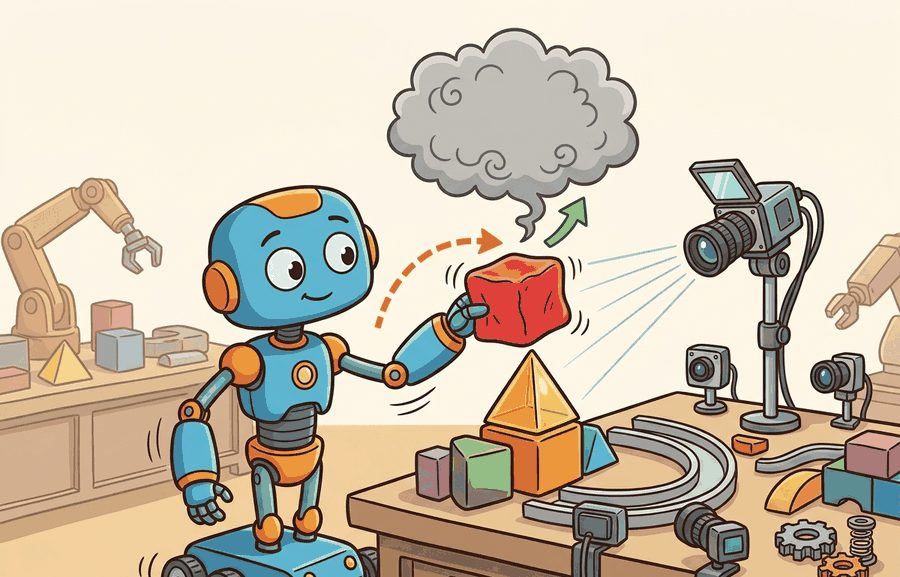

"Sometimes the hard part is not stepping physics. It is making the world look, sense, and scale like the task."
A Sensor-Rich Robot Learner

This section assumes familiarity with basic MuJoCo environment setup from section 11.2 and with GPU-parallel simulation concepts introduced in section 11.3. The Isaac Lab task-config pattern introduced here is applied directly in section 13.2, where domain randomization events are added to the same scene and asset structure. The massively parallel training workflows enabled by Isaac Lab's vectorized environments are developed further in section 17.1 alongside GPU-based policy optimization.
A warehouse robot trained overnight on 4,096 parallel Isaac Lab environments, each with randomized lighting, sensor noise, and object placement, can walk onto a real factory floor the next morning and generalize. That gap between simulation and deployment has narrowed in many published sim-to-real results, and Isaac Lab is a primary reason why when the task's fidelity requirements are actually met, not automatically. Built on Isaac Sim's photorealistic renderer (Isaac Sim uses RTX path-traced rendering, which simulates individual light rays bouncing through the scene, so a camera or depth sensor in simulation sees shadows, reflections, and noise patterns close to what the same physical sensor would capture, rather than the flat-shaded preview graphics of a typical game engine) and the OpenUSD scene standard (OpenUSD is the layered scene-description format detailed later in this section), it connects GPU-scale reinforcement learning (RL), lifelike synthetic sensors, and reproducible task configs into one workflow. Isaac Lab structures environments around explicit task configs, changes the sim-to-real transfer story through rich sensor randomization, and lets you set up a task config you can actually train on.
Parallel simulation is not only faster. It changes which research questions become practical by making sweeps, ablations, and failure replay cheap enough to run routinely.
This section connects dynamics, rendering, and GPU RL: the simulator choice is valid when perception data, contact dynamics, and training throughput support the same embodied experiment.
Isaac Gym was important because it showed how GPU simulation could change reinforcement learning throughput. The current path is Isaac Lab. NVIDIA's migration documentation states that Isaac Gym Preview Release, IsaacGymEnvs, OmniIsaacGymEnvs, and Orbit have been superseded by Isaac Lab workflows. For new projects, the practical rule is direct: start with Isaac Lab unless you are reproducing an older result.
Choose Isaac Sim or Isaac Lab when photorealistic sensors, USD assets, domain randomization, and large-scale robot learning workflows are part of the task contract. Record renderer settings, physics step, sensor latency, and asset provenance.
Do not begin a new robot-learning project on Isaac Gym because an old repository used it. Use Isaac Lab, then document any compatibility constraints if you need to reproduce a legacy baseline.
Isaac Lab is not only a physics engine wrapper. It organizes environments, assets, sensors, controllers, task definitions, vectorized simulation, and learning libraries into a reproducible workflow, and as Figure 11.4A illustrates, the stack is strongest when assets, sensors, randomization, training traces, and replayable evaluation stay connected. This matters for the chapters that follow: benchmarks in Chapter 12, domain randomization in Chapter 13, and massively parallel RL in Chapter 17.
The main engineering benefit is that task structure becomes explicit. A good Isaac Lab experiment separates scene assets, robot articulation (the kinematic chain of rigid links and joints that make up the robot's body), observation groups, action terms, reward terms, termination rules, curriculum events, and randomization events. That separation is why the stack is heavier than MuJoCo, and also why it is useful when one policy must be trained across thousands of sensor-rich variations. Figure 11.4B below makes that layering explicit, showing how Isaac Lab sits on top of Isaac Sim and OpenUSD, with legacy Isaac Gym positioned as the deprecated predecessor beneath both.
| Term | Role | Use when |
|---|---|---|
| Isaac Sim | Simulation application with rendering, sensors, assets, and USD scenes | You need high-fidelity scenes, synthetic sensors, or robotics simulation infrastructure |
| Isaac Lab | Robot-learning framework built on Isaac Sim | You train, evaluate, or benchmark policies with RL, imitation learning (IL), or motion planning workflows |
| OpenUSD | Scene description and interchange format | You need complex assets, scene composition, and tool interoperability |
| Legacy Isaac Gym | Older GPU RL preview framework | You reproduce older baselines, not when starting new work |
Of the three foundations in that vocabulary, OpenUSD is the one whose role is least obvious, so it is worth seeing exactly why a scene format earns a place beside the simulator and the learning framework. OpenUSD matters for embodied AI because physical constraints depend on what the scene actually contains. Friction coefficients, mass distributions, collision geometry, and articulation joints must transfer intact across three stages: the authoring tool, the simulator, and the real robot's planning stack. When each tool uses its own format, those properties drop out or map wrongly. A policy then trains in one environment and faces a different physical world during deployment. USD provides a shared contract. The same asset carries its physics annotations into Isaac Sim, a renderer, a motion planner, and a data pipeline, and no one re-specifies them at each boundary.
USD stores scene content as a layered composition of typed primitives. Each object, mesh, joint, or material is a "prim" with attributes and metadata. Layers stack non-destructively: a base layer holds geometry, a physics layer adds mass and friction, and a randomization layer overrides those values per training variant. When Isaac Lab loads a task, it resolves that layer stack into a final scene graph. PhysX (NVIDIA's GPU-accelerated rigid-body physics engine, the dynamics solver underneath Isaac Sim) then receives the composed physics attributes directly. Any application that reads USD resolves the same stack, so the geometry the animator exports is the geometry the simulator collides against.
What happens when a friction coefficient silently drops to zero at the format boundary between your asset tool and your simulator? The robot trains for days in a frictionless phantom world, then slips on the first real surface it touches. USD's layered composition exists precisely to close that gap.
Think of USD layered composition like a recipe written on transparencies stacked on an overhead projector. The bottom sheet specifies the base dish: its shape and structure. A second transparency laid on top adds seasoning (physics properties like mass and friction). A third sheet, placed only for a specific dinner party, swaps out the spice levels for guests who prefer less heat (randomization overrides). When you look through the full stack, you see one unified recipe, and any cook reading that same stack sees identical instructions. Swap out the top sheet and the base remains untouched, ready for the next variation.
Once the scene and its layered physics are composed, the next question is how Isaac Lab organizes everything the policy must observe and act on. Isaac Lab examples usually revolve around task configuration: scene, robot, observations, actions, rewards, terminations, events, and randomization. Code Fragment 1 uses a lightweight dataclass to show this structure without requiring a local Isaac install.
# Isaac Lab task planning skeleton: separate task choices before training.
# Dataclasses make the environment contract explicit and easy to audit.
# Replace this with Isaac Lab config classes in a full project.
from dataclasses import dataclass, asdict
@dataclass(frozen=True)
class TaskContract:
robot: str
observations: tuple[str, ...]
actions: tuple[str, ...]
randomizations: tuple[str, ...]
success_metric: str
def as_row(self) -> dict[str, object]:
return asdict(self)
reach_task = TaskContract(
robot="Franka Panda",
observations=("joint_pos", "joint_vel", "target_pose"),
actions=("joint_position_targets",),
randomizations=("object_mass", "table_friction", "camera_pose"),
success_metric="end_effector_distance < 0.03 m",
)
print(reach_task)TaskContract(robot='Franka Panda', observations=('joint_pos', 'joint_vel', 'target_pose'), actions=('joint_position_targets',), randomizations=('object_mass', 'table_friction', 'camera_pose'), success_metric='end_effector_distance < 0.03 m')The hand-written task contract is about 25 lines and only records intent. Isaac Lab turns the same categories into runnable vectorized environments, integrated sensors, assets, randomization events, and learning-library hooks. The shortcut handles simulation plumbing, while the researcher still owns the task definition and evaluation protocol.
Trace how PhysX receives a final friction value when Isaac Lab composes a three-layer USD stack for a single randomized environment. The base layer authors a table prim with no physics. The physics layer adds an attribute: physics:dynamicFriction = 0.80. The randomization layer, written only for environment index 1742, sets physics:dynamicFriction = 0.42. Resolution walks from strongest to weakest layer: (1) check the randomization layer for dynamicFriction on the table prim, found, value 0.42; (2) because a stronger opinion exists, the physics-layer value 0.80 is shadowed, not summed; (3) the base layer contributes geometry only, so the composed table prim carries friction 0.42. PhysX therefore simulates contact for env 1742 with $\mu = 0.42$, while env 0 (no randomization opinion) keeps $\mu = 0.80$. The base geometry mesh is byte-identical across both because no layer overrode it. Result: one asset file, two physically distinct worlds, zero geometry duplication.
Choose Isaac Lab when the task needs thousands of GPU environments, rich sensors, USD assets, synthetic data, or a path toward sim-to-real on NVIDIA hardware. It is strongest for locomotion, manipulation, and humanoids, where rendering and sensor fidelity matter as much as dynamics.
Consider a specific case: the Unitree H1 humanoid locomotion task in the Isaac Lab example suite runs 4096 parallel environments on a single A100, stepping physics at 200 Hz per environment. At that scale, a 10-minute training run accumulates roughly 500 million physics steps, an amount that would take weeks on a single-threaded CPU simulator. The same task in MuJoCo on CPU (single environment, 200 Hz) would take on the order of thousands of hours to collect equivalent data (rough illustrative estimate; actual throughput depends on hardware and task complexity).
So far: choose Isaac Lab when the task needs GPU-scale parallel environments, rich sensors, and USD assets; the Unitree H1 case shows why, thousands of parallel environments turn a weeks-long CPU training run into minutes.
That gap is why the tool choice is not about personal preference. A task may require curriculum learning over varied terrain heights, masses, and friction coefficients at once. There, throughput determines feasibility, not preference. Consider a concrete case. A curriculum needs 50,000 episodes to converge on a single-threaded CPU simulator. On 4,096 parallel GPU environments it converges in roughly 300 episodes of wall-clock time, because each "episode" the researcher waits for really runs 4,096 episodes at once.
Throughput buys feasibility, not correctness: it multiplies whatever the simulator already models, so validate the model before you scale it.
Do not treat the stack as one opaque score. Validate dynamics, observations, and training throughput separately. A policy that learns quickly from privileged state may still fail when camera latency, depth noise, lighting, or segmentation labels enter the observation loop. A policy that succeeds in simulation but collapses on real hardware is not a policy: it is a very expensive hypothesis about what the real world might have been like.
Isaac Lab's default observation pipeline can silently expose privileged ground-truth state (exact object pose, contact forces, hidden joint targets) that will not be available on a real robot. A manipulation policy trained on 4096 parallel environments with full state access can reach near-perfect success in simulation while failing on the first real grasp attempt because depth noise, occlusion, and RGB-to-depth calibration error were never in the loop. The fix is to configure separate "proprioceptive" and "camera" observation groups from the start and train with the noisy sensor branch active, not patched in post-hoc.
Choose a lighter tool when you need a small control experiment, quick model inspection, or a minimal reproducible dynamics loop. Heavy tools can hide mistakes if the team cannot inspect the physics contract.
A legged locomotion team might choose Isaac Lab because it needs GPU-parallel terrain randomization, domain randomization, camera or depth observations, and compatibility with RL libraries. The same team might keep a small MuJoCo model for debugging a single gait controller before launching thousands of worlds.
The ETH Zurich and ANYbotics ANYmal quadruped learns blind and perceptive locomotion over stairs, rubble, and slopes by training in massively parallel Isaac-stack environments with randomized terrain, friction, and actuator dynamics. The same controller, trained across thousands of simultaneous terrain variants, deploys onto the physical robot for industrial inspection patrols at oil and gas sites. Terrain-curriculum randomization at GPU scale is what lets one policy survive surfaces it never saw individually during training.
Input: task specification (robot morphology, observation space $\mathbf{o} \in \mathbb{R}^n$, action space $\mathbf{a} \in \mathbb{R}^m$), reward function $r(\mathbf{o}, \mathbf{a}, \theta_{\text{env}})$, randomization ranges $\Delta\theta$
Output: validated Isaac Lab task config, replayable evaluation seeds, training-ready vectorized environment with $N$ parallel worlds
Expected output: An Isaac Lab experiment record should include the task config, asset and USD references, observation groups, action space, reward terms, termination rules, randomization events, sensor settings, number of parallel environments, GPU device, and replayable evaluation seeds.
Isaac Lab earns its complexity when the replay artifact can answer two questions at once: what did the policy do, and what did the simulated sensor actually show it?
Does your experiment require Isaac Lab's asset, sensor, and scaling stack, or are you using it because it sounds more complete? Name the feature that would be missing in MuJoCo before choosing the heavier path.
Take the task contract in Code Fragment 1 and add a second success metric for safety, such as maximum force, joint limit violation, or collision count. Explain why success rate alone is not enough for embodied evaluation.
Goal: feel directly why GPU-scale throughput multiplies whatever the simulation models, the central claim of this section, by measuring how parallel-environment count changes data-collection rate and how a deliberate fidelity error survives more steps.
Tools needed: Isaac Lab installed (or Gymnasium plus a vectorized env such as gymnasium.vector.SyncVectorEnv with the classic CartPole-v1 if you lack an NVIDIA GPU), Stable-Baselines3 for PPO, and a stopwatch or time.perf_counter().
What to vary: (1) the number of parallel environments $N \in \{1, 16, 256, 4096\}$ (cap at what your hardware allows); (2) a single physics-fidelity parameter, for example pole mass or cart friction, set once to a wrong value and held fixed across all runs.
What to observe: record steps-per-second and wall-clock time to reach a fixed return for each $N$, then plot throughput against $N$ (expect a near-linear regime that flattens when the GPU saturates). Then evaluate every trained policy under the correct physics value it never trained on. You should see that larger $N$ converges in less wall-clock time yet transfers no better to the corrected dynamics: more steps reinforced adaptation to the wrong world. Budget 15 to 30 minutes.
Foundation-model pre-training on Isaac Lab synthetic data. Isaac Lab is the sim-side anchor for large-scale robot foundation models. NVIDIA GR00T N1 (2025) mixed synthetic Isaac Lab rollouts across Franka, Unitree H1, and Fourier GR-1 morphologies with Open X-Embodiment teleoperation before fine-tuning, establishing a pattern where simulation diversity substitutes for real-robot data collection at scale.
Photorealistic sensor simulation for policy transfer. RTX path-traced depth and segmentation in Isaac Sim have enabled policies that transfer from simulation to real hardware with substantially reduced calibration. Work from NVIDIA Research and ETH Zurich (2024, as of writing) on sim-to-real for dexterous manipulation indicates that renderer fidelity, not only physics fidelity, influences transfer success; groups using the same Isaac Lab task config but different renderer presets have reported measurably different success rates on the same real robot.
Whole-body humanoid control at GPU scale. The Isaac Lab humanoid locomotion and loco-manipulation suite (2024-2025), paired with work such as HumanoidBench and Berkeley Humanoid, uses 4096-plus parallel Isaac Lab environments to train whole-body controllers that coordinate base locomotion with arm manipulation simultaneously. This scale makes curriculum learning over terrain, payload, and contact schedules computationally tractable for the first time.
Open problem. Reproducibility in Isaac Lab experiments remains unsolved: two groups training identical task configs on different GPU generations and HDRI lighting sets report success-rate gaps of 10-20 percentage points before any policy or reward difference is introduced. A tractable thesis would define a renderer-invariant evaluation protocol, possibly by exporting standardized contact-force and depth-noise fingerprints alongside every Isaac Lab checkpoint, and test whether policies certified as equivalent under that protocol transfer equivalently to a real robot.
A common assumption is that running 4,096 parallel Isaac Lab environments and accumulating hundreds of millions of physics steps guarantees strong sim-to-real transfer. This is wrong: throughput multiplies whatever the simulation already models, so if friction coefficients, sensor noise, actuator delays, and contact geometry are poorly specified, more steps only reinforce a policy that is well-adapted to the wrong world. In embodied AI the bottleneck is usually simulation fidelity and domain coverage, not raw step count. The correct mental model is that GPU-scale throughput makes thorough randomization and sensor-realistic observation loops practical; it does not substitute for them.
Isaac Lab is the current NVIDIA path for robot learning. Use it when scale, sensors, rendering, and USD assets are part of the experiment, and treat Isaac Gym as legacy unless reproducing old work.
Section 11.5 examines Newton, a newer open physics engine built on Warp and OpenUSD that connects directly to this accelerator and scene-interchange story.
Beginner (weekend): Franka reach task with Gymnasium wrapper. Build a simple Franka Panda reach environment in Isaac Lab using the provided CartpoleEnv as a template, expose it through a Gymnasium interface, and train a policy with Stable-Baselines3 Proximal Policy Optimization (PPO). The key challenge is correctly configuring the observation group so that joint positions and target pose come from the Isaac Lab observation manager rather than hard-coded privileged state.
Intermediate (1 to 2 weeks): Sim-to-real gap audit for a pick-and-place task. Train a manipulation policy in Isaac Lab with domain-randomized object mass, table friction, and HDRI lighting (High Dynamic Range Imagery: real-world panoramic light maps used to relight a synthetic scene with realistic, varied illumination, rather than a single fixed studio light), then evaluate the same policy checkpoint under four sensor-noise levels using Isaac Lab's camera observation group. Expose results through a LeRobot dataset export so the gap between noiseless and sensor-realistic success rates is visible as a logged metric. The key challenge is configuring separate proprioceptive and camera observation branches from the start so the noisy evaluation does not require retraining.
Isaac Lab Project. "Isaac Lab Documentation."
The official Isaac Lab documentation is the starting point for current robot-learning workflows on Isaac Sim. It covers tasks, environments, migration guides, and integrations that matter for this section.
NVIDIA. "Isaac Sim Documentation."
Isaac Sim documentation covers the simulation application, rendering, sensors, assets, and USD workflows. It is most useful when the experiment needs rich scenes rather than only a fast dynamics loop.
Isaac Lab Project. "Migrating From IsaacGymEnvs."
This migration guide explains the relationship between deprecated Isaac Gym workflows and Isaac Lab. Readers maintaining older baselines should use it before porting environments or training scripts.
Alliance for OpenUSD. "OpenUSD Documentation."
OpenUSD is the scene-description foundation behind many rich simulation workflows. It matters here because Isaac Sim and Newton-style workflows increasingly depend on composed, interoperable scenes.
Isaac Sim Team. "Isaac Lab GitHub Repository."
The repository provides source code, examples, issues, and release activity. Practitioners should inspect it to verify current APIs and supported workflows before building long-running experiments.